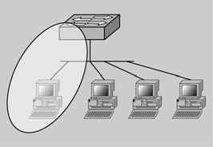

Protocols de nivell d'enllaç
La capa d’enllaç és la responsable de la transferència fiable d’informació entre dos equips a través del medi de transmissió fent servir els serveis de la capa física. Aquests dos equips han d’estar connectats al mateix medi i aquesta capa s’encarrega de donar-los una adreça perquè es puguin comunicar entre ells. Per fer més fàcil la comunicació, s’agrupa la informació en trames i es controla que arribin a la destinació sense errors, controlant el flux de la comunicació perquè els equips puguin rebre la informació.
En el cas que dos equips intentin fer servir el medi al mateix temps, es produirien errors pels encavalcaments. Per tant, aquesta capa també ha de gestionar el moment en què un equip pot accedir al medi i així mitigar les col·lisions.
Generalment, l’accés al medi es gestiona des del microprogramari (firmware) de la targeta adaptadora i l’enllaç lògic mitjançant programari en el controlador del dispositiu.
Serveis de la capa d'enllaç
Dins de la capa d’enllaç es poden diferenciar dos conjunts de serveis complementaris. D’una banda, la gestió de la informació de la capa de xarxa, com pot ser la comprovació d’errors i la gestió del flux de dades entre equips amb velocitats diferents, s’anomena control d’enllaç (logical link control, LLC).
De l’altra, la gestió de l’adreçament físic dels equips, la distribució de les trames i la gestió de l’accés concurrent al medi compartit s’anomena control d’accés al medi (medium access control, MAC).
Control d'enllaç lògic
El control d’enllaç lògic gestiona la transmissió de trames entre dues estacions sense cap node intermedi i, en conseqüència, permet l’accés múltiple. A més, s’encarrega d’especificar l’equip origen i l’equip destinació. En el cas de l’Ethernet, aquesta adreça s’anomena adreça MAC (medium access control address).
Aquest protocol defineix mecanismes per controlar l’intercanvi de dades entre estacions. Hi ha tres serveis possibles:
- Servei no orientat a connexió sense confirmació: Aquest mecanisme és el més senzill, ja que no inclou mecanismes de control de flux de dades ni de control d’errors, per la qual cosa, amb aquest sistema no es garanteix el lliurament de les dades.
És útil quan els mecanismes de control de flux i d’integritat ja s’ofereixen en capes superiors. Un exemple d’això és el TCP, que ja ofereix prou mecanismes per assegurar la transmissió de la informació.
En alguns casos és preferible un servei no orientat a connexió i sense confirmació. Per exemple, pot ser preferible perdre alguns paquets abans que evitar el retard que comporta la retransmissió en una aplicació de videoconferència. - Servei en mode connexió: S’estableix una connexió lògica entre els equips prèvia a l’intercanvi de dades. En aquest cas, hi ha un sistema de control de flux i d’errors.
Sol ser útil en dispositius extremament simples les capes superiors dels quals disposen de poc programari. - Servei no orientat a connexió amb confirmació: És una barreja dels anteriors: els datagrames es confirmen quan es reben, però no hi ha connexió.
Una aplicació possible són els senyals d’alarma: cal confirmar que s’han rebut correctament.
Control d'accés al medi
El control d’accés al medi (MAC, medium access control) fa referència als protocols que decideixen a quin ordinador es permet transmetre dades.
A l’hora de parlar del control d’accés al medi és important esmentar les dues categories que hi ha: les deterministes (per torns) i les no deterministes (a grans trets, “el primer que arriba és el primer a ser servit”).
Protocols MAC deterministes
Els protocols MAC deterministes utilitzen una modalitat basada en la creació de torns. Un exemple d’aquests torns es fonamenta en la transmissió de testimonis (tokens).
La tècnica de la transmissió de testimonis es basa en un costum propi de les tribus d’indis nadius americans que, durant les reunions, es passaven el testimoni o “bastó que parla”. De fet, la persona que tenia a les mans el “bastó” era escoltat per tothom fins que finalitzava el parlament, moment en què passava el testimoni a una altra persona.
Hi ha un protocol d’enllaç de dades, que rep el nom d’anell de testimoni (token ring), en què els ordinadors que estan connectats a la xarxa es distribueixen en forma d’anell (figura). Per aquest anell circula un testimoni (token) de dades especials que és pres temporalment per l’ordinador que vol transmetre dades. Un cop ha finalitzat la transmissió de dades, l’ordinador deixa lliure el testimoni perquè torni a circular per l’anell i pugui ser pres per un altre ordinador.
Físicament sol substituir-se l’anella per un concentrador al qual hi estan connectats tots els ordinadors. Aquest concentrador, quan arriba una trama per la connexió número n l’envia per la connexió n+1; quan n’arriba una per la darrera connexió, l’envia per la primera. D’aquesta manera simula una anella. Això permet realitzar una instal·lació física més senzilla.
Avui en dia, Token Ring ha quedat obsolet. No obstant això, altres protocols posteriors, com ara FDDI, s’han implementat seguint aquesta mateixa filosofia. FDDI és un dels protocols que treballen amb fibra òptica (però, ni molt menys, l’únic).
Protocols MAC no deterministes
Els protocols MAC no deterministes utilitzen la premissa “el primer que arriba és el primer a ser servit” (FCFS, first-come,first-served) com, per exemple, l’accés múltiple amb detecció de portadora i detecció de col·lisions (CSMA/CD, carrier sense multiple access / collision detect).
Aquest tipus de protocol és el que fa servir Ethernet, atès que permet que els dispositius de xarxa esdevinguin els responsables d’administrar el seu dret a transmetre. De fet, la mecànica es fonamenta en el fet que les estacions d’una xarxa CSMA/CD escoltin quin és el millor moment per transmetre. Malgrat tot, en cas que dues estacions transmetin alhora es produeix una col·lisió i cap de les transmissions de les estacions no té èxit.
En el moment en què les estacions de la xarxa senten que hi ha hagut una col·lisió, esperen en silenci; és a dir, a partir d’una ordre per torns, les estacions transmissores esperen un període de temps aleatori abans de transmetre. Aquesta espera per part de les estacions permet que no hi hagi una segona col·lisió.
Col·lisió
A l’Ethernet, una col·lisió és el resultat de dos nodes que transmeten simultàniament. Les trames de cadascun dels dispositius col·lideixen i es fan malbé quan es troben en el medi físic.
Com heu pogut deduir, hi ha dos punts importants en tot protocol d’accés al medi:
- On es fa el control? Si el control es fa centralitzat o distribuït.
- Com es fa el control? És un compromís entre prestacions, cost i complexitat tenint en compte el tipus de medi que es comparteix.
En el cas sobre el lloc on es fa el control, si parlem d’un control centralitzat voldrà dir que es designa un equip que fa de controlador del medi. En el cas que sigui un control descentralitzat, tots els equips en conjunt decideixen qui accedeix en aquell moment al medi.
Podem classificar el cas sobre la manera com es fa el control en tres grans grups:
- Rotació circular. Mitjançant la tècnica de rotació circular, es dóna a cada estació l’oportunitat de transmetre en una seqüència determinada. Cada estació pot fer-ho dins d’uns límits establerts o bé declinar l’oportunitat.
En el cas que molts equips tinguin la necessitat de transmetre durant un llarg període de temps és molt eficient, ja que es reparteixen el medi equitativament. Al contrari, si hi ha pocs equips que tinguin la necessitat de transmetre informació durant un llarg període de temps, resulta poc eficient, atès que es perd el temps en què els equips que no volen transmetre es van passant el testimoni. - Reserva.L es tècniques amb què es fa una reserva del medi són adequades per al trànsit continu: es divideix el temps en porcions i els equips que volen transmetre fan reserves.
- Contenció. En el cas de trànsit a ràfegues, són més adequades les tècniques de contenció, que consisteixen a no controlar el torn per transmetre, és a dir, que tots els equips poden transmetre en qualsevol moment. Per això cal determinar alguna manera de saber si el medi ja està en ús. Aquest sistema, per la naturalesa totalment distribuïda que té, és molt eficient quan la càrrega de la xarxa és de mitjana a alta. En cas que la càrrega sigui alta, tendeix a ser menys eficient per les col·lisions que s’hi produeixen.
IEEE 802
Dins del conjunt d’estàndards IEEE 802, podem trobar la definició del medi, la capa física i la capa d’enllaç de protocols com l’Ethernet, l’anell de testimoni, el Wi-Fi, el WiMAX o el Bluetooth.
Un exemple de protocol d’accés al medi per rotació circular és l’anell de testimoni (IEEE 802.5).
Un exemple de protocol d’accés al medi amb reserva és el DQDB (IEEE_802.6).
Un exemple de protocol d’accés al medi per contenció és l’Ethernet (IEE 802.3).
Cada un dels estàndards pertany a un grup de treball que s’identifica amb un punt i el número. Per exemple, el grup de treball de l’Ethernet s’anomena 802.3, el qual defineix tant la capa física com el control d’accés al medi. Amb la capa física també s’inclou l’especificació del medi de transmissió i la topologia de xarxa. El protocol de control d’enllaç lògic no el recull l’IEEE 802.3, sinó que es defineix en l’IEEE 802.2, depenent del tipus de medi (l’Ethernet, anell de testimoni, l’FDDI, 802.11, etc.).
L'Ethernet 802.3
La tècnica de control d’accés al medi més usada actualment en topologies en bus i estrella és la d’accés múltiple amb detecció de portadora i detecció d’errors o col·lisions (CSMA/CD, carrier sense multiple access / collision detect). Aquesta tècnica va ser desenvolupada per Xerox per a xarxes locals i va ser la base per a l’especificació posterior IEE 802.3.
Aquesta tecnologia de difusió duu a terme tres funcions fonamentals:
- Transmetre i rebre paquets de dades.
- Descodificar paquets de dades i comprovar la validesa de les adreces abans de passar-los a les capes superiors del model de referència OSI.
- Detectar els errors que hi pugui haver en la xarxa o en els mateixos paquets que es transmeten.
En el mètode d’accés múltiple amb detecció de portadora i detecció de col·lisions, els dispositius de la xarxa treballen “escoltant abans de transmetre” (CS, carrier sense); és a dir, quan un dispositiu vol enviar dades, en primer lloc comprova si el medi està ocupat. En cas que estigui lliure, el dispositiu comença a transmetre les dades, tot i que, mentrestant, el dispositiu continua escoltant per confirmar que no hi ha cap altra estació que també transmeti dades. Si s’esdevé aquesta situació, hi podria haver una col·lisió. En cas contrari, el dispositiu finalitza la transmissió i torna a la modalitat d’oient (figura).
Quan col·lideixen dues trames perquè fan servir el medi concurrentment, el medi queda inutilitzat mentre dura la transmissió. Les regles que es defineixen per a l’ús del medi són les següents:
- L’equip transmet si el medi està lliure.
- Si el medi està ocupat, l’equip continua escoltant fins que quedi lliure.
- Si es detecta una col·lisió, l’equip transmet un senyal d’alerta perquè tots els equips s’adonin de la col·lisió.
- Espera un temps aleatori i ho torna a intentar.
Per tant, es tracta d’un control d’accés al medi per contenció descentralitzat, ja que no hi ha cap equip encarregat de la gestió del medi, sinó que aplicant un conjunt de regles en tots els equips sorgeix un ordre del caos aparent.
Anell de testimoni (l'IEEE 802.5)
La tècnica d’anell de testimoni per al control d’accés al medi es basa en una petita trama, anomenada testimoni (token), que va circulant per tots els equips.
Detecció de col·lisions
Els dispositius de xarxa tenen la capacitat de detectar quan s’ha produït una col·lisió, atès que augmenta l’amplitud del senyal (CD, collision detect). Quan hi ha una col·lisió, cadascun dels dispositius que transmet dades continua amb la transmissió durant un espai de temps breu per confirmar que tots els dispositius veuen la col·lisió i introdueixen un algoritme de retard; és a dir, esperen un espai de temps aleatori.
En començar a transmetre, es canvia un dels bits del testimoni i comencen a circular les trames de dades. Evidentment, quan una estació transmet desapareix el testimoni i, per tant, totes les estacions s’han de mantenir escoltant.
La trama que s’ha emès fa una volta completa a l’anell i l’estació emissora la torna a llegir (per comprovar que no s’han alterat les dades) i l’elimina. El testimoni es torna a inserir quan l’equip ha acabat de transmetre o si li arriba de nou l’emissió abans d’haver acabat d’emetre. Un cop inserit de nou el testimoni, l’estació següent decideix si vol transmetre o passa el testimoni a la següent.
Es tracta d’un sistema poc eficaç si la càrrega del medi és baixa, ja que un equip ha d’esperar que li arribi el testimoni encara que la resta no vulgui transmetre. Tot i això, en cas de càrrega alta és un sistema per torns molt equitatiu que dóna l’oportunitat de transmetre a tots els equips de la xarxa.
Els inconvenients principals de la xarxa en anell de testimoni són la definició de procediments per controlar els possibles errors en l’anell. Per exemple, si es perdés el testimoni, cap equip no podria transmetre.
En aquest estàndard també podem trobar certes característiques opcionals com uns bits per definir la prioritat d’una trama, l’opció d’alliberament ràpid del testimoni, o bé, una xarxa dedicada per al pas del testimoni.
Aquest protocol actualment es troba en desús per la popularització de l’Ethernet.
El DQDB (l'IEEE 802.6)
DQDB significa ‘bus dual de cua distribuïda’ (distributed-queue dual-bus network) i ja no s’usa per l’expansió de les xarxes LAN i WAN. Al principi estava dissenyat per ser una xarxa MAN (xarxa d’àrea metropolitana), a mig camí entre una LAN (xarxa d’àrea local) i una WAN (xarxa d’àrea àmplia), que prometia velocitat per a xarxes que s’escapen de l’àrea local.
En el cas de l’estàndard IEEE 802.6, és format per dos busos unidireccionals paral·lels per a tota l’àrea que s’ha de cobrir. Quan un equip vol transmetre, de primer ha de confirmar l’adreça del receptor (dreta o esquerra) i després ha de fer servir el bus adequat. Un cop formada la xarxa, cada equip ha de comprovar les adreces dels altres equips, cosa que genera grans esperes, especialment quan la xarxa creix en nombre d’equips.
Les col·lisions
Les col·lisions acostumen a produir-se quan dos o més estacions Ethernet transmeten alhora dins d’un mateix domini de col·lisió. A grans trets, una col·lisió és detectada mentre s’estava transmetent una trama, tot i que, en intents posteriors, la trama s’hagi transmès correctament.
Una diferència important que hi ha entre col·lisió i transmissió diferida és que la primera es produeix quan ja s’ha començat a transmetre la trama, mentre que la segona es produeix abans de començar a transmetre la trama.
Podeu trobar la definició de domini de col·lisió a l’apartat “Dominis de col·lisió i difusió (broadcast i segmentació)”.
Aquesta situació és diferent en el cas de les trames amb transmissions diferides, atès que permeten la inexistència de col·lisions.
Transmissió diferida
La transmissió diferida és un procés de latència en què entra una estació amb intenció de transmetre si, prèviament, ha confirmat que el medi està ocupat. A grans trets, la transmissió es basa en una cadena de processos, com “esperar, escoltar i transmetre”.
Les trames parcials o totalment fallides són les resultants de l’existència d’una col·lisió i s’anomenen fragments de la col·lisió.
Tipus de col·lisions
Els principals tipus d’errors que hi poden haver amb trames Ethernet s’anomenen col·lisions locals, col·lisions remotes i, per últim, col·lisions endarrerides.
La col·lisió local és una situació que es produeix quan un senyal que viatja per un medi es troba amb un senyal d’una altra estació. És en aquest moment quan les ones se solapen, això és, es cancel·len algunes parts del senyal i unes altres es reforcen (és a dir, se’n dobla el valor). Quan es dobla una part del senyal, es produeix un augment del seu voltatge per sobre del nivell màxim permès. Totes les estacions presents en el segment de la xarxa on es produeix aquesta situació notaran aquest augment de la tensió i la identificaran com una col·lisió.
Una de les conseqüències d’una col·lisió és la presència de trossets de les trames que han col·lidit circulant per la xarxa. En aquest cas, quan el resultat que es deriva de la col·lisió són trames malmeses que no presenten la longitud mínima i que, a més, tenen una seqüència de verificació (FCS, frame check sequence) errònia s’anomena col·lisió remota.
Col·lisions endarrerides
Es pot donar una col·lisió endarrerida si el temps que tarda una senyal a desplaçar-se des d’un extrem de la xarxa a l’altre excedeix, aproximadament, els 57,6 microsegons.
Per altra banda, s’anomena col·lisió endarrerida la presència d’una trama amb la seqüència de verificació errònia provocada per una targeta d’interfície de xarxa (NIC, network interface card) defectuosa. Val a dir que també es considera col·lisió endarrerida la degradació de la trama d’informació per una longitud de cable de xarxa excessiu.
Un cop definits els diferents tipus de col·lisions que hi poden haver, és important situar la seva influència dins de l’estructura d’una trama Ethernet IEEE 802.3 tal com mostra la figura.
Característiques de cada tipus (resum):
- Col·lisió local:
- Es produeix quan coincideixen dues trames al mateix segment.
- Es detecta per sobrevoltatge al senyal (per coincidència de dades amb voltatge alt —els voltatges es “sumen”—).
- Col·lisió remota:
- Es detecta perquè hi ha fragments de trama circulant pel segment. Aquests fragments tenen una longitud inferior a la mínima i/o una FCS errònia.
- Sol originar-se per una col·lisió local en un altre segment. Aquesta col·lisió genera senyals amb sobrevoltatge que no són reenviats pel dispositiu que uneix els segments.
- Col·lisió endarrerida:
- Es detecta per una FCS errònia.
- És originada habitualment per una targeta de xarxa defectuosa (NIC) o per la degradació del senyal causada per un cable de xarxa de longitud excessiva.
Dominis de col·lisió i difusió (broadcast i segmentació)
Un domini de col·lisió és, tal com mostra la figura, un segment físic d’una xarxa d’ordinadors on hi ha possibilitats que els paquets puguin xocar, això és, en el cas que dos ordinadors transmetin per un medi compartit.
Un segment de xarxa és qualsevol medi de xarxa compartit com, per exemple, un cable i un dispositiu, és a dir, un commutador o un concentrador.
- 
- Un segment de xarxa és qualsevol medi de xarxa compartit com, per exemple, un cable i un dispositiu, o sigui un commutador o un concentrador.
Des del punt de vista dels dispositius que hi ha en una xarxa, cal destacar que els commutadors i els encaminadors segmenten dominis de col·lisió. En el cas dels concentradors, presenten un únic domini de col·lisió, és a dir, en el cas que dos equips provoquin una col·lisió en un segment associat a un port del concentrador, tots els altres dispositius es veuen afectats (encara que estiguin connectats a diferents ports).
Símbols utilitzats
Un commutador (switch) es representa com un dispositiu rectangular amb 4 fletxes.
Un concentrador (hub) es representa com un dispositiu rectangular amb 2 fletxes.
Un encaminador (router) es representa com un dispositiu de forma circular.
Tal com es veu en la figura, un domini de difusió MAC (media access control) està constituït per tots els dispositius que estan connectats a una xarxa d’àrea local i que reben difusions de trames de dades enviades d’una màquina a totes les altres. A grans trets, podem dir que un domini de difusió MAC és un grup de dispositius de la xarxa que envien i reben missatges de difusió entre ells.
Des del punt de vista dels dispositius presents en una xarxa, cal destacar que els encaminadors segmenten els dominis de difusió.